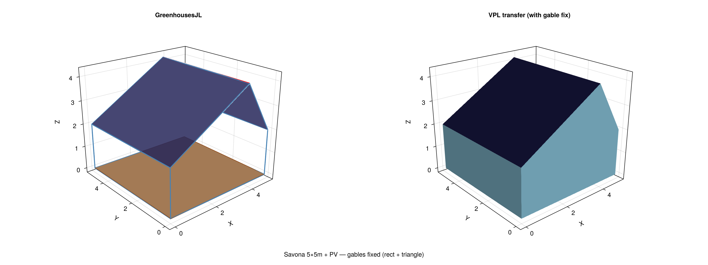
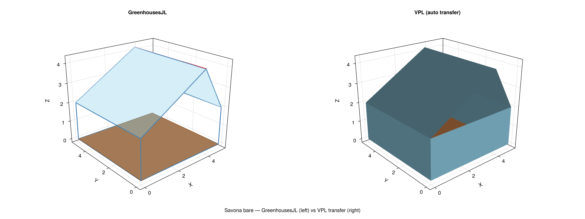
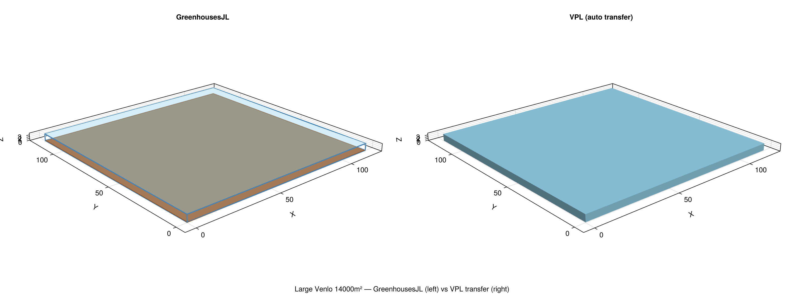
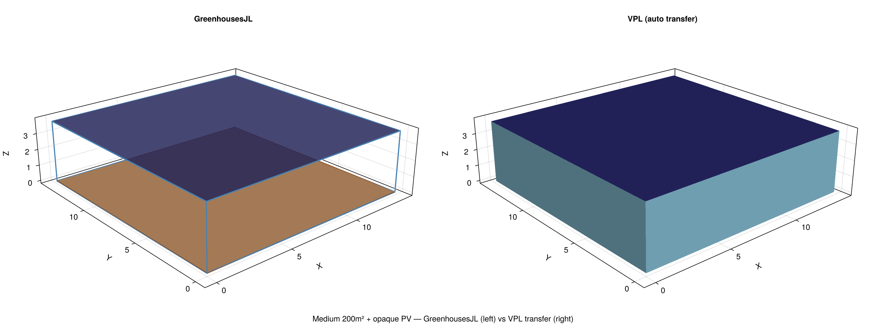

Tutorial: Geometry Transfer (VPL & PlantBiophysics)
GreenhousesJL can automatically transfer its greenhouse geometry and climate conditions to VPL (3D ray-tracing) and PlantBiophysics (leaf energy balance).
Pipeline overview
GreenhousesJL VPL (3D Monte Carlo)
───────────── ────────────────────
GreenhouseParams
│
├─► greenhouse_to_quads() → [Quad...] (Cartesian)
│ │
│ └─► greenhouse_to_vpl() → VPL Mesh
│ + materials, colors (ready for RayTracer)
│ + plant positions
│ + sensor grid
│
└─► greenhouse_to_plantbiophysics(p, sol, t)
→ Dict(:T, :PPFD, :Rh, ...) (ready for Atmosphere)Transfer to VPL
Step 1: Load VPL before GreenhousesJL
using VirtualPlantLab # must be loaded first
using GreenhousesJLStep 2: Define greenhouse and transfer
tmy = load_tmy("path/to/weather.txt")
p = SavonaParams(tmy; with_walls=true, panel=SemiTransparentPanel(τ=0.4, coverage=0.5))
# Sensor grid at floor level
sensors = sensor_grid_positions(p; n_sensors=6)
# Full transfer: geometry + plants + sensors → VPL Mesh
mesh, colors = greenhouse_to_vpl(p;
n_plants = 9,
n_leaves = 6,
sensor_positions = sensors)
# mesh has materials attached → ready for ray-tracing
has_materials(mesh) # trueStep 3: Ray-tracing
source = DirectionalSource(mesh, θ=0.0, Φ=0.0, radiosity=500.0, nrays=500_000)
rt = RayTracer(mesh, source, settings=RTSettings(pkill=0.9, maxiter=4))
trace!(rt)
# Extract sensor power, leaf absorption, etc.Step 4: Render
import GLMakie
verts = vertices(mesh)
pts = [GLMakie.Point3f(v[1],v[2],v[3]) for v in verts]
cols = [GLMakie.RGBf(c.r,c.g,c.b) for c in colors]
faces = [GLMakie.TriangleFace{Int}(3i-2,3i-1,3i) for i in 1:length(pts)÷3]
fig = GLMakie.Figure(size=(900,650))
ax = GLMakie.Axis3(fig[1,1], aspect=:data)
GLMakie.mesh!(ax, pts, faces, color=cols)Validated geometries
The transfer has been validated on 4 different greenhouse types:
Side-by-side comparison: GreenhousesJL (left) vs VPL transfer (right)
Savona 5×5m with PV panels:

Savona bare (glass only):

Large Venlo 14000m²:

Medium 200m² with opaque PV:

| Greenhouse | Floor | Roof | PV | VPL triangles |
|---|---|---|---|---|
| Savona + PV | 5×5m | Asymmetric 30/60° | Semi-transparent 50% | 126 |
| Savona bare | 5×5m | Asymmetric 30/60° | None | 126 |
| Large Venlo | 118×118m | Flat | None | 124 |
| Medium + PV | 14×14m | Flat | Opaque 30% | 124 |
All geometries transfer correctly with identical shapes, correct surface types, and materials attached for VPL ray-tracing.
Transfer to PlantBiophysics
Extract greenhouse climate conditions at any simulation time step, formatted for PlantBiophysics:
# Run a greenhouse simulation
p = SavonaParams(tmy; with_walls=true, crop=CropModel(LAI=2.5))
sol = solve(ODEProblem(greenhouse_rhs!, initial_state(p), (0.0, 86400.0), p),
Tsit5(); reltol=1e-6, saveat=3600.0)
# Extract conditions at hour 12
pb = greenhouse_to_plantbiophysics(p, sol, 13)
# Dict(:T => 20.0, :PPFD => 450.0, :Rh => 0.70, :P => 101.325, ...)This Dict can be passed directly to PlantBiophysics:
using PlantBiophysics, PlantMeteo
meteo = Atmosphere(T=pb[:T], Wind=pb[:Wind], P=pb[:P], Rh=pb[:Rh])
leaf = ModelList(
energy_balance = Monteith(),
photosynthesis = Fvcb(VcMaxRef=120.0, JMaxRef=210.0),
stomatal_conductance = Medlyn(4.0, 0.03),
status = (Ra_SW_f=pb[:Ra_SW_f], sky_fraction=0.5, PPFD=pb[:PPFD], d=0.05, Cₛ=pb[:Cₛ])
)
run!(leaf, meteo)Time series extraction
# Extract conditions at every hour
conditions = greenhouse_timeseries_to_pb(p, sol; every=1)
# → Vector of Dicts, one per time stepIntermediate format: Quads
The transfer uses Quad as a universal intermediate representation:
quads = greenhouse_to_quads(p)
for q in quads
println("\$(q.name): \$(q.surface_type) at \$(q.p1) → \$(q.p3)")
endEach Quad has:
name, surface identifierp1, p2, p3, p4, Cartesian vertices (x, y, z)surface_type,:floor,:wall,:roof,:pv_roof,:screen,:sensor
This format can be exported to any target: VPL, EnergyPlus IDF, Blender OBJ, etc.